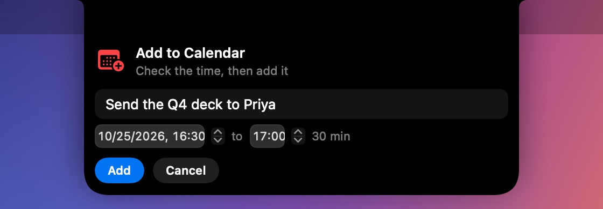
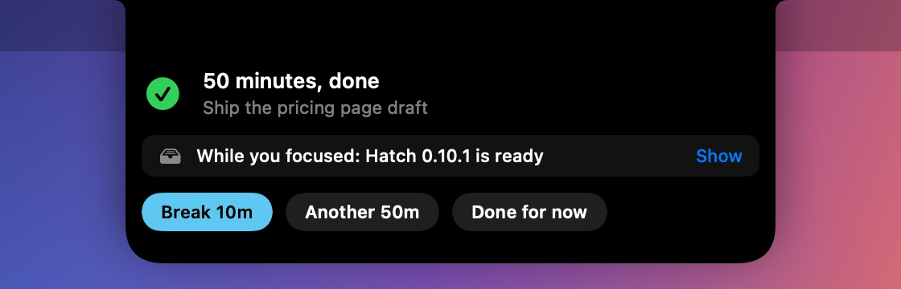

A quick fix.
Calendar access now works on the signed build, and quitting Hatch is easier.
- 📅
Calendar access works again Fixed
On the notarized build, granting Calendar access now takes effect right away — so today's events and one-click meeting joins come back.
- ⏻
Quit from the notch New
A Quit button now sits in the notch (next to Settings) and at the bottom of Settings, alongside the existing menu-bar option.
A pane of glass.
A new look for the open notch — and Hatch is now signed and notarized by Apple, so it installs with no security warning.
- 🪟
Frosted and Liquid Glass New
Choose how Hatch looks when it opens, in Settings › Theme: Solid, a Frosted blur, or Apple's Liquid Glass on macOS 26. The closed notch stays solid black, so it still blends into the menu bar.
- 🔒
Signed & notarized by Apple New
Hatch is now signed with an Apple Developer ID and notarized by Apple. New installs open cleanly, with no “unidentified developer” warning.
Make it yours.
A bigger release: five new ways to use the notch, a theme to make it personal, and clearer previews. Every feature can now be switched on or off.
- 🎨
Themes & glow New
Pick an accent colour, trace the notch with a soft or strong glow, and let it pulse. Six one-tap presets, or your own colour. It recolours Hatch's buttons and highlights too.
- 📋
Snippets New
Pin the text you retype all day — email, UPI ID, address, boilerplate — in the Clipboard tab. Click to copy, or press ⌃⌥V from any app.
- 📸
Screenshot shelf New
Take a screenshot and it drops down to copy, mark up or drag out, then waits on the Tray. And the Tray now shows a real thumbnail of every item, so you can tell screenshots apart at a glance.
- ⚡️
Shortcuts launcher New
Run your macOS Shortcuts from a new tab (⌃⌥R). Name one “Figma: Export” and it shows up when Figma is in front.
- ☕
Keep awake New
Stop your Mac sleeping during an export, a download or a presentation — with a cup button at the top of Hatch, and automatically during a focus block.
- 🎚️
Turn any feature on or off New
A new Features list in Settings lets you switch each part of Hatch on or off, so it does exactly what you want and nothing you don't.
- 🎵
Lyrics find more songs Fixed
Hatch now cleans up track titles (dropping “(feat. …)”, “(From …)” and remaster tags) before looking up lyrics, so many more songs match — and the lines keep better time with the vocal.
Add to Calendar, right away.
A small fix for Smart Copy.
- 📅
The calendar editor opens instantly Fixed
After you copied a time and clicked Add to Calendar, the card could stay as it was until something else changed in the notch. The start and end times now appear straight away, and busy-app warnings update the moment they change, too.
Your watchlist, beside the camera.
The black strip around your camera now shows your stocks when nothing else is going on. Both sides of the notch work independently, so a meeting or a song no longer pushes everything else out. And your note pad can turn lines into to-dos, reminders and calendar events, and save each day to Apple Notes.
- StocksTwo tickers beside the camera, sliding through your list.
- Two slotsEach side of the notch shows its own thing.
- Notes to to-dos#todo, right-click, or a time in a line.
- Calendar timesPick the start and end before adding.
- Apple NotesEach day's notes, kept in Notes.
Stock tickers in the notch New
Add the stocks and indices you follow, from AAPL to RELIANCE or the NIFTY 50, and they appear beside the camera, one each side, with the price and today's change. Every few seconds both slide up to the next pair. Point at the notch and they hold still; click one to open its chart.


- Set it up in Settings › Stocks: search for a company or index, add up to 12, and drag them into the order you like.
- Prices come from Yahoo Finance with no account needed, or from Finnhub or Twelve Data with a free API key, which Hatch keeps in your Keychain. They refresh every minute and may be delayed by up to 15 minutes.
- Charts open in TradingView, Google Finance or Yahoo Finance, your choice. (Google Finance and TradingView don't offer prices to apps, so they're used for charts.)
- Prefer to keep the left side free for menus? Choose “Right side only”. You can also show tickers only while the market is open.
Both sides of the notch, working independently Improved
Each side of the notch is now its own slot. The most important thing takes the right side and the next takes the left, so a meeting countdown and your music can show at the same time. Your tickers fill whichever side is free, one at a time when the other side is busy. Only things that need you right now, like a reminder, take over the whole notch.

Notes that turn into to-dos New
Start a line with #todo and press Return: it's added to your to-dos and marked ☐ in the note. Or select any text, right-click and choose Add to To-dos. Mention a time in a line, like “lunch with Sam tomorrow at 1pm”, and a bar appears under the note offering a reminder or a calendar event.

Add to Calendar asks for the time Improved
When you add an event from Smart Copy or a note, Hatch now shows the title, start and end first, set to half an hour unless you change it, so the event lands in your calendar exactly as you want.

Each day's notes, kept in Apple Notes New
Tick Save each day to Apple Notes at the bottom of the Notes tab and Hatch keeps one note per day, like “Hatch · Saturday 24 October 2026”, in a Hatch folder, updated as you type. Each morning the pad starts fresh, and yesterday stays safe in Notes, so your notes build up into a journal you can search.
- macOS asks once to let Hatch use Notes. If that permission is turned off, the Notes tab tells you where to turn it back on.
- The pad is cleared only after the previous day is safely saved.
Get more done, with less noise.
Hatch 0.10 adds the focus loop: plan your day, focus without interruptions, step away and come back to exactly where you were, then close the day. It also brings two smart helpers, Smart Copy and busy-app warnings, and runs on a fraction of the energy it used before. It all happens in the notch, one thing at a time, and every part can be switched off.
- 1PlanPick today's One Thing. Capture to-dos from any app.
- 2FocusA timed block you can see. Hatch goes quiet.
- 3MeetingsA Join card a minute before, and time left during.
- 4ResumeLeave a note on the way out; get it back on return.
- 5Close the daySee what got done and set up tomorrow.
1 · Plan your day New
Writing down what matters frees your mind to do it. Each morning, Hatch asks one question: what would make today a win? Your answer becomes Today's One Thing and stays at the top of Home all day, with a button to start focusing on it.


- Change your One Thing any time: open Hatch and click it on Home.
- Quick capture never switches apps. Press Return to save or Esc to cancel.
2 · Focus, and see the time New
Start a 25, 50 or 90 minute block from Home or with ⌃⌥F. A ring around the notch fills as time passes and your task sits underneath, so you always know what you're on and how long is left. While you focus, Hatch holds back its own alerts. Your reminders and meetings still come through.



3 · Meetings that don't derail you Improved
Hatch already counted down to meetings. Now, a minute before one starts, a card drops down with a Join button. During the call the notch shows the minutes left and turns orange in the last five, so you end on time.
4 · Pick up where you left off New
Getting back into a task is the hardest part of being interrupted. If a meeting starts in the middle of a focus block, its card asks where you were. One line is enough. Join pauses your block; when the meeting ends, Hatch hands your note back with the time you had left. Locking your Mac mid-block works the same way.


5 · Close the day New
At the end of your workday, Hatch offers a short wrap-up: what you got done, how long you focused, what's still open, and an optional One Thing for tomorrow. Choose Done for today and Hatch goes quiet until morning. Only the reminders you set yourself still ring.


- Why 18:00? That's only when Hatch offers the wrap-up by itself, on weekdays. You can wrap up whenever you like with the Wrap up button on Home or Wrap Up the Day… in the Hatch menu, and change the time in Settings.
- Changed your mind after “Done for today”? Click it on Home to reopen the wrap-up.
Smart Copy: copy it, Hatch handles the rest New
Copy “send the deck to Priya tomorrow at 4:30” from Slack, Mail or anywhere, and before you've switched apps the notch offers to remind you or add it to your calendar. Copy a flight number for its status, an address to open it in Maps, or a phone number to call it.


- It works entirely on your Mac and reads only what you copy, the moment you copy it. Passwords from password managers are skipped.
- The card leaves by itself after a few seconds if you don't need it. Turn it off in Settings › Smart helpers.
Know what's draining your Mac New
When an app keeps your Mac busy for minutes, or takes a huge share of its memory, the notch gives a short buzz and tells you which app it is and how much it's using, with a button to quit it or open Activity Monitor.

- When does it appear? When an app stays above one full CPU core for 2 minutes, or uses 40% of your memory. Short spikes are ignored, and macOS's own processes are never suggested for quitting.
- At most once an hour per app. Choose “Don't warn about this app” from Not now to silence one for good, and reset that in Settings.
- It waits while you're in a focus block and after you've finished for the day.
Lighter than ever Improved
Hatch now wakes only when something changes and reuses its music and browser checks instead of rebuilding them every few seconds. On our test MacBook it went from about 11% of the CPU to about 1% when idle, which means longer battery life and a cooler Mac.
Quiet by design
- One thing at a time. The closed notch shows a single item: a meeting, then a focus block, then music. Nothing stacks up.
- Cards only when you need to act. A card drops down for a reminder, a meeting about to start, something you just copied, an app draining your Mac, the end of a block, or the start and end of your day. Everything else waits in Hatch.
- Cards leave on their own. Each has one main button and a way out. Only reminders stay until you answer them.
- No new tabs. Everything lives on Home and in To-dos.
Shortcuts and settings
| ⌃⌥Space | Open or close Hatch |
| ⌃⌥N | Quick capture a to-do from any app |
| ⌃⌥F | Start a focus block on your One Thing, or pause and resume it |
| Settings › Smart helpers | Turn Smart Copy and busy-app warnings on or off, and reset apps you chose never to be warned about. |
| Hatch menu | Quick Capture, Start or Pause Focus, and Wrap Up the Day… |
| Settings › Focus and your day | Block length, the task under the notch, the morning question, the wrap-up and its time. You can also name Shortcuts to run when a block starts and ends, for example to turn on a macOS Focus. |
Always in step with your browser.
When you pause a video or close your browser, Hatch now catches up within seconds.
- ⏸️
No more phantom "playing" Fixed
After you paused YouTube and closed Chrome or Safari, Hatch could keep showing the song as playing. It now notices straight away and clears it.
- ⚡️
Never stuck waiting on a busy app Improved
If a browser or music app is slow to answer, Hatch moves on after a few seconds instead of freezing what it shows.
Updates, one click away.
New versions now reach you within the hour, and updating is always just a click inside Hatch.
- ⬇️
An Update button in Hatch New
When a new version is ready, an Update button appears at the top of Hatch and stays there until you install it, even if you closed the notification.
- ⚙️
Updates in Settings New
See which version you have and when Hatch last checked, and check or install with one click.
- ⏱️
New versions arrive sooner Improved
Hatch now looks for updates every hour and whenever your Mac wakes, instead of every few hours, so fixes reach you the same day.
Ready the moment you're back.
Play, pause and skip now respond instantly after your Mac wakes up or you log back in.
- ▶️
Controls work right after you unlock Fixed
Returning to your Mac and pressing play in Hatch sometimes did nothing until a moment later. Hatch now gets itself ready as soon as you unlock, so every tap counts.
- 🌐
More dependable browser controls Improved
If a tab reloaded or moved while you were away, Hatch now finds your video again before pausing or playing it, instead of quietly missing.
Updates that take care of themselves.
Install Hatch once, and every new version arrives on its own, with no downloads and no security prompts.
- ⚡️
Automatic updates New
Hatch downloads new versions in the background and installs them the next time it quits. You'll always have the latest features without lifting a finger.
- 🔐
Permissions that stay put Improved
Calendar and media-control permissions now carry over to every new version, so you grant them once and never again.
- 🎛️
You're in control New
Prefer to choose when to update? Turn off automatic installs in Settings › Updates, and update with one click whenever you like.
- 🛡️
Only genuine updates Security
Every update is verified with Hatch's own signature before it installs, so nothing else can ever pose as a Hatch update.
Always know what's new.
Hatch now tells you about new versions right in the notch, and gives you a friendly start the first time it runs.
- 🔔
Update notifications New
When a new version is out, a card drops from the notch with what's new, so you never miss an improvement.
- 🔄
Check for Updates New
One click in the menu bar menu tells you whether you're on the latest version.
- 👋
A warm welcome New
The first time Hatch runs, it shows you how to open it and offers to start at login, so you know it's working from the first second.
- 🗓️
A clear early-access timeline Improved
Hatch now tells you upfront that early access is free until 1.0, and points the way when it ends. Your reminders keep working either way.
Your voice, one click away.
Found a bug or have an idea? Telling us now takes seconds.
- 💬
Send Feedback New
Choose Send Feedback from the menu bar or Settings, and a ready-to-send report opens with your Hatch and macOS versions already filled in.
Your notch, put to work.
The first early-access release: Hatch turns the space around your camera into a live panel for what you're doing right now.
- 🎵
Now playing, everywhere New
See and control what's playing in Apple Music, Spotify, and YouTube or any video in Safari, Chrome, Brave, Edge and Arc, without switching apps.
- 🎤
Live lyrics New
Time-synced lyrics fill in word by word under the notch as the song plays, and slide out of the way when your pointer comes near.
- 📹
Join meetings in one click New
Hatch finds the link for Zoom, Google Meet, Teams, Webex, Slack huddles, FaceTime and more, even when it's buried in the invite, and counts down to each meeting.
- ⏰
Reminders you can't miss New
Add a to-do and choose when to be reminded. When it's due, the notch drops down, shakes and chimes until you snooze it, finish it or delete it.
- 📥
A shelf for your files New
Drop files onto the notch to keep them handy, then drag them into any app or AirDrop them.
- 📋
Clipboard history and notes New
Bring back anything you copied with one click, privately, plus a scratchpad that saves as you type.